Simulated study
Simulate ▸ Simulated study builds one study and opens its data.
Scenario, outcome and design
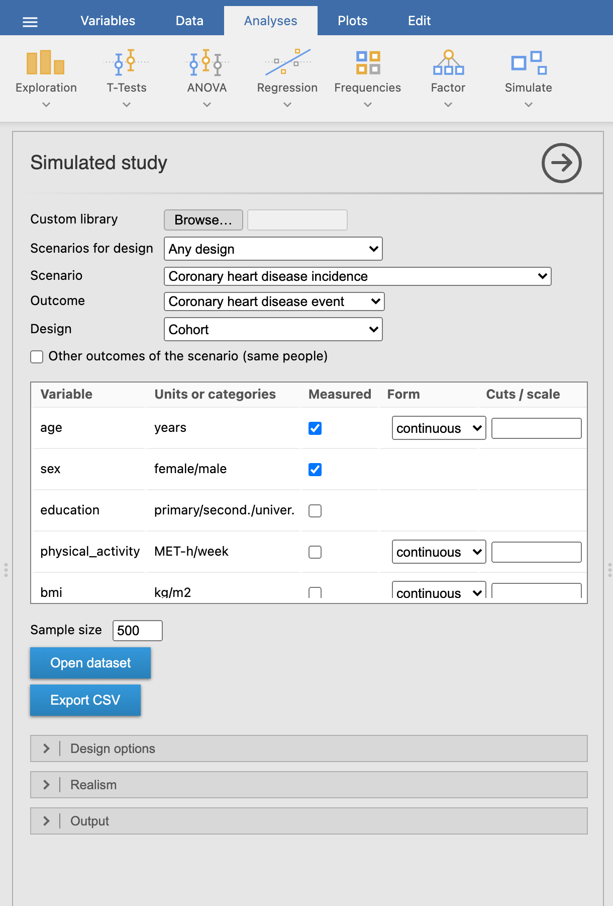
- Scenarios for design narrows the pickers to the scenarios (and outcomes) that fit one design, e.g. every scenario that can be run as a case-cohort study.
- Scenario and Outcome come from the library (built-in, or a custom one read with Browse…), grouped by clinical domain.
- Design lists only the designs that fit the outcome: an event in a population can be studied with a cohort or a case-control study (unmatched or matched), a patient outcome with a prognosis cohort, a treatment effect with a randomised trial or, for continuous outcomes, a 2×2 crossover.
- Variables: every variable is measured at start; untick one to leave it out of the dataset. It still acts on the outcome, which is how you teach residual confounding. The second column shows units or categories; the Exposure column marks the variable(s) the biases act on (below).
- Form groups a numeric variable: median split, tertiles, quartiles, quintiles (cut points from the sample, as a study would compute them) or cuts typed as values (
18.5, 25, 30; with a decimal comma18,5; 25) or percentiles (10%, 90%). Labels readQ2: 120–131orG1: ≤25. log2 and log10 transform it instead (of x + 1 when there are zeros); the answer key then gives the effect per doubling or per 10-fold increase. scale divides it by the number typed in Cuts / scale (e.g.10for alcohol in units of 10 g/day, or1to undo the scenario’s default unit); the answer key labels the contrast per 10 g/day and re-expresses the true effect in that unit. - Sample size: people in the study (cases plus controls in a case-control study).
Design options, realism and output
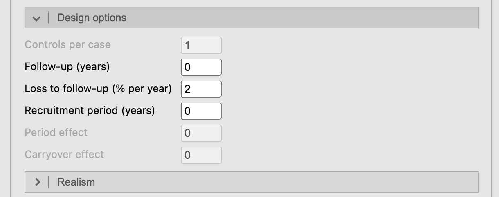
Design options: controls per case; follow-up, loss to follow-up and recruitment period for cohorts and trials; subcohort, clusters and ICC, interaction, interim looks, visits and dropout, regions; period and carryover for a crossover; entry threshold for a before-after study; bias, slope and errors of two methods. An empty box keeps the scenario’s value (many scenarios set their own: 4 controls per case, 3 visits); the Study summary lists the values used. Repeated measures gives crossover and longitudinal trials one row per measurement (long, for mixed models) or one per person (wide, for a paired t-test or repeated-measures ANOVA).
Biases builds a bias into the study, and into the answer key’s large study, so the key shows what the biased design estimates: recall bias and controls selected by exposure (case-control), a collider
admittedcaused by the outcome and the exposure, non-adherence to treatment related to prognosis (a columnreceived; the key adds as-treated and per-protocol rows), informative loss to follow-up, a treatment started during follow-up with no effect (immortal time:treated,treatment_start), and in diagnostic studies spectrum (only the most severe diseased) and partial verification (only some test-negatives get the reference standard). Recall, selection and the collider need a ticked Exposure. See Teaching.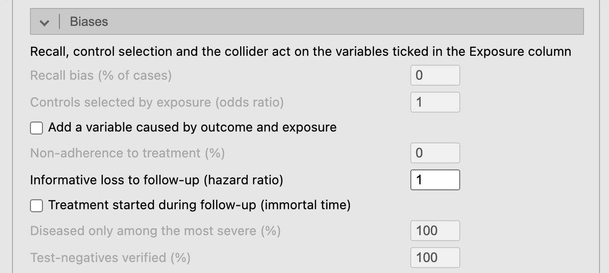
Biases: only those of the chosen design are enabled. Realism:
- missing values in the measured variables: completely at random, depending on the outcome, or depending on the missing value itself (MNAR);
- measurement error: the reliability of numeric measures and a share of misclassified categories, non-differential. The answer key uses the same error, so it shows how much the estimates are diluted and how much confounding remains;
- data-entry errors (decimal slips, swapped digits, 999 codes) to find and clean, and extra variables with no effect (
extra_01, …) for multiple testing and variable selection; - laboratory: values below a marker’s or a biomarker’s detection limit reported as missing, as LOD/2 or as the LOD; diagnostic markers run in batches, optionally with cases and controls in separate batches.
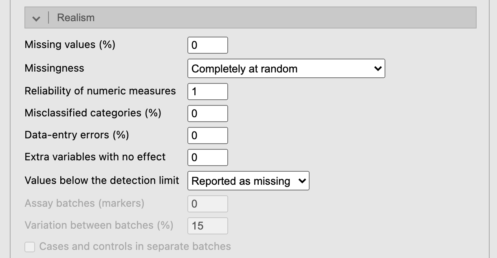
Realism options. Output: seed and student key (any text, e.g. a student ID: each key gives a different dataset from the same options; capitals and surrounding spaces are ignored), which tables to show, and Answer key report, which saves the whole key (true model, what the design should estimate, markers, diagram, notes) as one HTML page for the teacher. Export class takes the student keys of the class (separated by commas) and saves a zip with one CSV and one codebook per student, a register of keys and seeds, and one answer key report. A teacher code unlocks a library locked with it (see Teaching).
Several outcomes in one study
Most trials record several outcomes. Other outcomes of the scenario (same people) adds every other outcome of the scenario as columns for the same people (cross-sectional, cohort, prognosis and trial designs), and the answer key gets a block per outcome. Outcomes can be linked (correlated beyond their common causes, e.g. HbA1c and control below 7%), and overall survival can be built from a first event (an illness-death model: in the colon cancer trial, death after recurrence).
For example, Intensive blood-pressure control (SPRINT) has five outcomes: the primary cardiovascular event, death from any cause and three harms (acute kidney injury, hypotension, syncope), to weigh benefits against harms and to see what testing many outcomes does. The Outcome picker lists all five, and the dataset holds only the one chosen (by default the cardiovascular event). Tick Other outcomes of the scenario (same people) to add the other four as columns (time_death, death, kidney_injury, hypotension, syncope); the answer key then has a block per outcome.
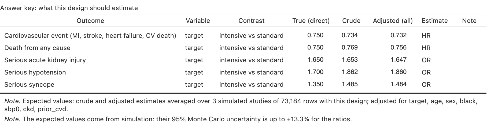
Two more designs
- Before-after (single group): everybody is treated and measured before and after, with no control group. The mean change mixes the effect, the natural trend and, if only people with high values are enrolled (Enrol only above percentile), regression to the mean.
- Method comparison: the outcome measured twice in each person, by methods A and B (B with a bias, a proportional bias and its own error), for a Bland-Altman analysis; the key gives the mean difference, the limits of agreement and the regression slope of B on A, attenuated by A’s own error.
The same seed always gives the same study, and the people of the superpopulation do not depend on the design: the same seed under another design samples the same people. Showing the key, the diagram or a table does not draw the study again; only options that change the data do.
The data
Open dataset opens the data in a new jamovi window, with nominal, ordinal and ID columns typed and each column described; Export CSV saves them, and Export codebook saves the data dictionary as another CSV (a CSV keeps no column descriptions). Analysing the data in jamovi says which analysis and module fit each design.
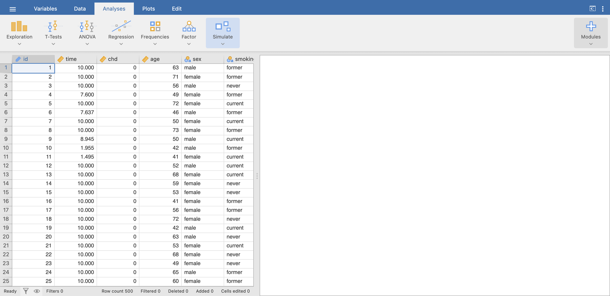
Column names and category labels follow jamovi’s language (age → edad/edat, current → fumador), from dictionaries the teacher can edit (Library).
Results
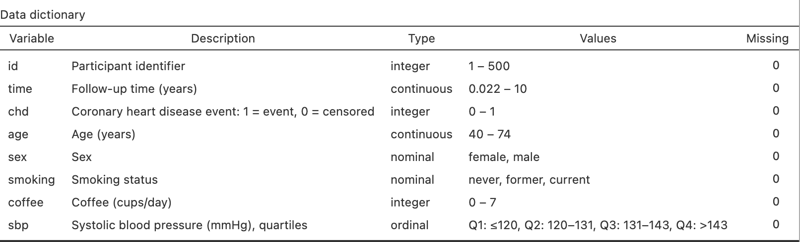
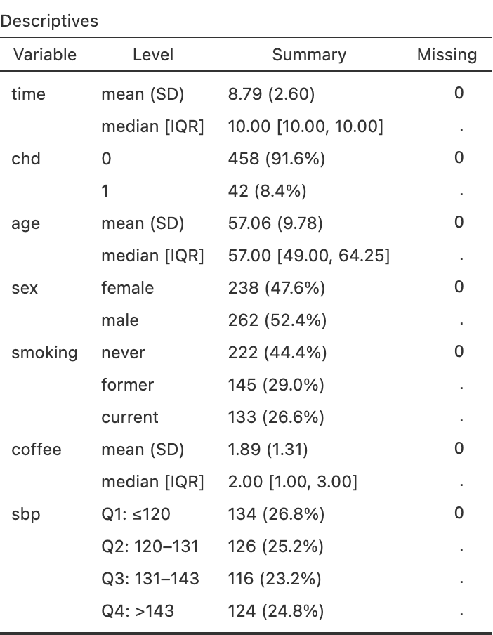
The causal diagram shows the scenario’s structure: measured variables in solid boxes, unmeasured ones dashed, null variables in italics, grey arrows for paths among variables, dark arrows for effects on the outcome. It is shown by default without effect sizes; tick Effect sizes on the diagram to colour the arrows (red raises the outcome, blue lowers it) and give their sizes.
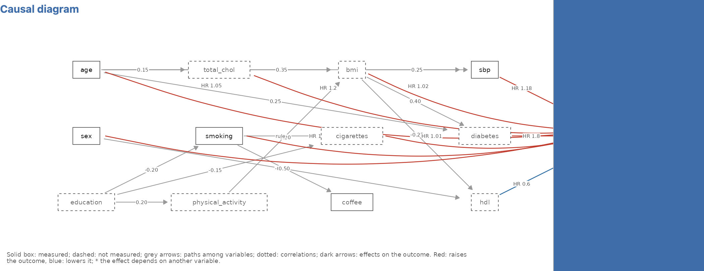
The answer key
Answer key adds these parts, for the teacher:
True model: by contrast, the direct (conditional) effects the data were generated with, including the null variables, and the total effect of each variable that also acts through others (mediators), estimated in a large simulated population; a variable acting only through others reads no direct effect; acts through ….
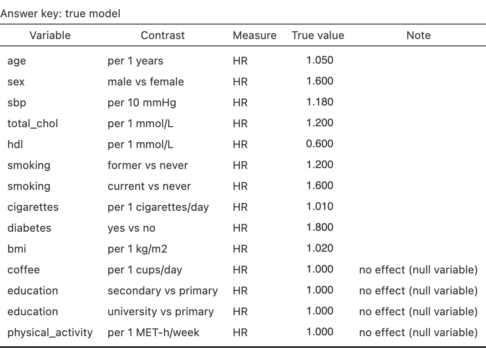
True model: direct and total effects; education acts only through smoking, BMI, blood pressure, HDL and diabetes. What this design should estimate: crude and adjusted estimates averaged over three large simulated studies with the same design, measured variables, grouping, measurement error and biases (one for matched case-control), with their Monte Carlo uncertainty in a note. This is what a correct analysis of the student’s data should approach. Adjusted (all) adjusts for every measured variable; Adjusted (DAG) adjusts each one only for the measured variables it does not cause, and approaches its True (total). Where the generating measure differs from the design’s (hazard ratios generated, odds ratios estimated by a case-control study) a note says so. Trials with a binary or event outcome add absolute effects: risk per arm, risk difference, NNT, risk ratio, and the marginal next to the conditional odds or hazard ratio. Diagnostic studies add accuracy at a cut-off: sensitivity, specificity and predictive values, true and in the large study.
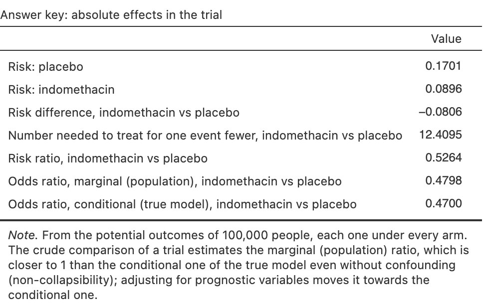
Absolute effects of a trial: risks, NNT, and the marginal odds ratio closer to 1 than the conditional one. 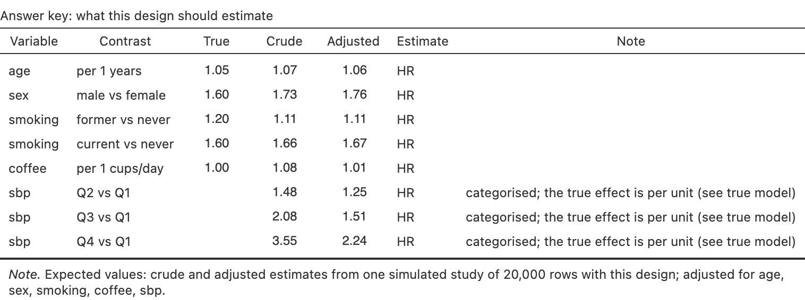
Expected estimates: the crude coffee effect disappears after adjustment; systolic pressure in quartiles. Notes: teaching note of the scenario, calibration of the outcome, latent structure and the sources of the parameters.
The Study summary warns when there are fewer than 10 events per parameter of a model adjusted for every measured variable.
Compare designs
Simulate ▸ Compare designs takes one scenario and outcome, the measured variables and a sample size, and simulates every ticked design from the same population (same seed and student key); designs that do not fit the outcome are hidden. It shows:
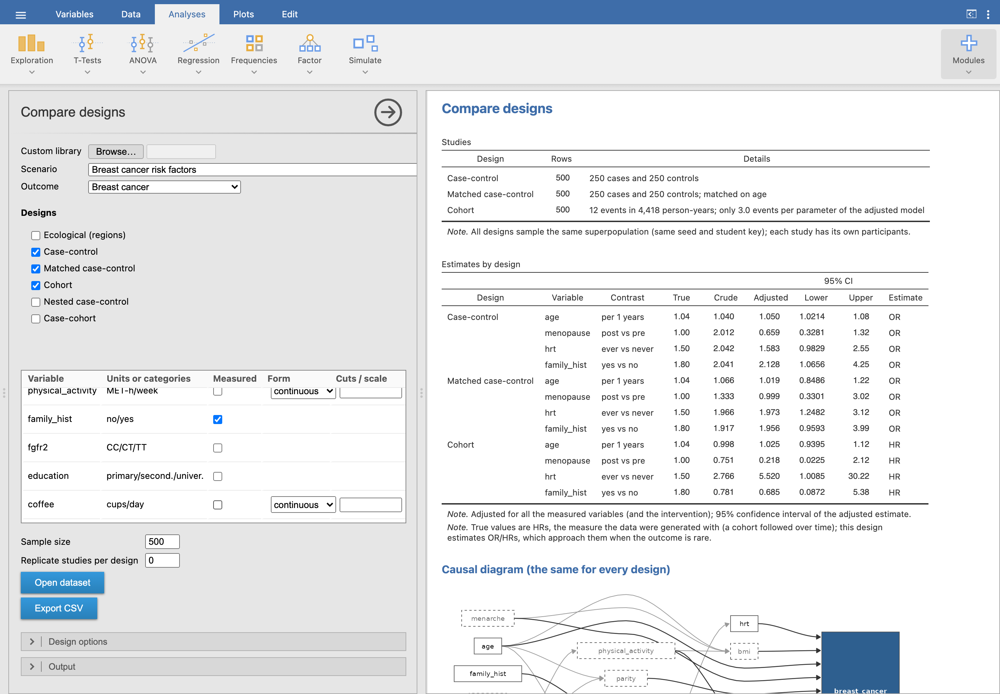
- Studies: rows, cases and controls, events, clusters or regions of each one;
- Estimates by design: crude and adjusted estimates with their 95% CI next to the true values, and optionally what each design gives in a large study;
- a forest plot of the same estimates, one panel per contrast;
- the causal diagram, once, because it is the same for every design: what changes between designs is how the population is sampled, not how it works.
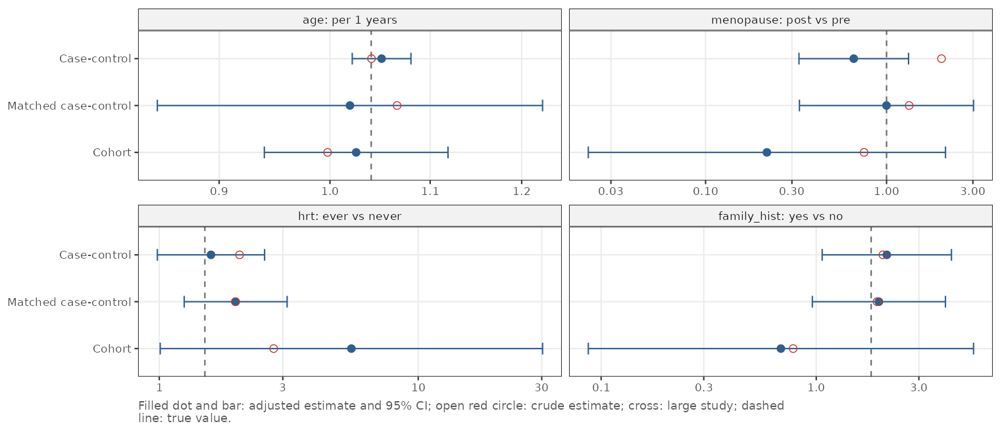
Replicate studies per design (next to the sample size) draws that many studies of each design and reports each estimate’s mean, bias, spread (empirical standard error) next to the model’s, power and the coverage of its confidence intervals, with a plot of their sampling distribution.
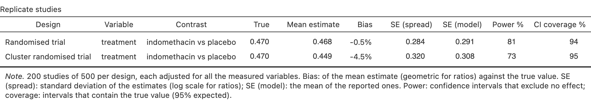
Open dataset stacks all the studies in one dataset with a design column, to analyse them with jamovi’s filters. Typical exercises: a case-control vs a cohort study of a rare cancer (same estimates, very different precision for the same number of people), a parallel vs a crossover trial, an ecological vs an individual-level analysis.